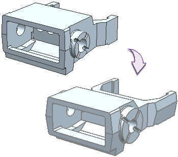

Estimated time to complete this lesson: 17–28 minutes
The following picture shows the changes you need to make to this part:

To complete this project quickly, you should be familiar with the following features.
Move Face
Resize Face
Cross Section Edit
Linear and Angular Synchronous Modeling dimensions
Divide Face
Make Parallel